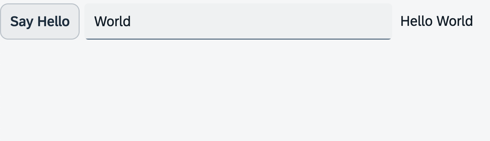

We'll create a view model in our controller, add an input field to our app, bind its value to the model, and bind the same value to the description of the input field. The description will be directly updated as the user types.

You can view all files at OpenUI5 TypeScript Walkthrough - Step 7: JSON Model and download the solution as a zip file.
We add an onInit function to the controller. This is one of OpenUI5's lifecycle methods that is invoked by the framework when the
controller is created, similar to the constructor of a control.
Inside the function we instantiate a JSON model. The data for the model only contains a single property for the "recipient", and inside this it also contains one additional property for the name.
To be able to use this model from within the XML view, we call the setModel function on the view and pass on our newly
created model.
import MessageToast from "sap/m/MessageToast"; import Controller from "sap/ui/core/mvc/Controller"; import JSONModel from "sap/ui/model/json/JSONModel"; /** * @name ui5.walkthrough.controller.App */ export default class AppController extends Controller { onInit() : void { // set data model on view const data = { recipient: { name: "World" } }; const dataModel = new JSONModel(data); this.getView()?.setModel(dataModel); } onShowHello(): void { MessageToast.show("Hello World"); } };
We add an sap/m/Input control to our view, allowing the user to enter a name for the person they want to greet.
To make this work, we connect, or "bind", the value of the input control to the name attribute of the
recipient object in our JSON data model. We do this using a simple binding syntax, which is a straightforward way
to link data of the model and the view.
To bind a control property to your view model data, you need to specify a sap.ui.base.ManagedObject.PropertyBindingInfo for the property. A binding info is always
initiated by enclosing it in curly brackets {…}, and the properties defined in the binding info's API are
placed within the brackets.
You can omit all properties of the binding info and just provide the binding path as a simple string. A binding path consists of path segments separated by forward slashes (`/`) which point to a property in the model that you want to bind to. This applies to all OpenUI5-provided models.
Binding paths can be either absolute or relative. Absolute binding paths start with a slash, while relative binding paths start with a name token and are resolved relative to the context of the control that is being bound (we'll discuss this later on).
We also create a greeting message by combining the static "Hello" text with the name attribute from our data model and
assigning it to the description property of the input field. This means that the greeting message will dynamically
update with whatever name the user enters. To ensure that the greeting message updates in real time as the user types, we set the
valueLiveUpdate attribute of the input control to true.
<mvc:View
controllerName="ui5.walkthrough.controller.App"
xmlns="sap.m"
xmlns:mvc="sap.ui.core.mvc">
<Button
text="Say Hello"
press=".onShowHello"/>
<Input
value="{/recipient/name}"
description="Hello {/recipient/name}"
valueLiveUpdate="true"
width="60%"/>
</mvc:View>